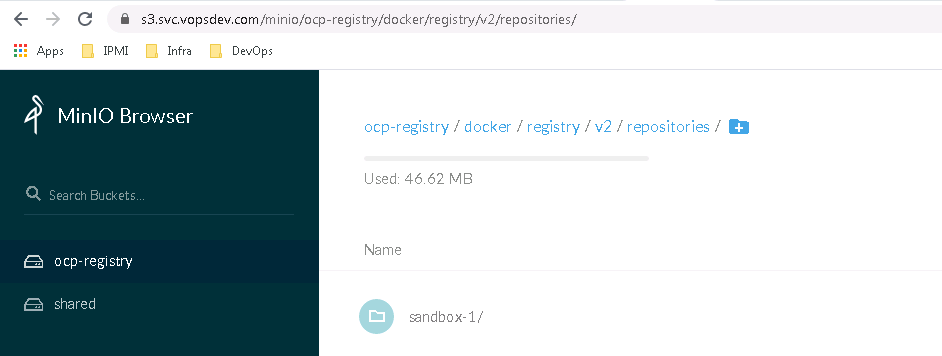
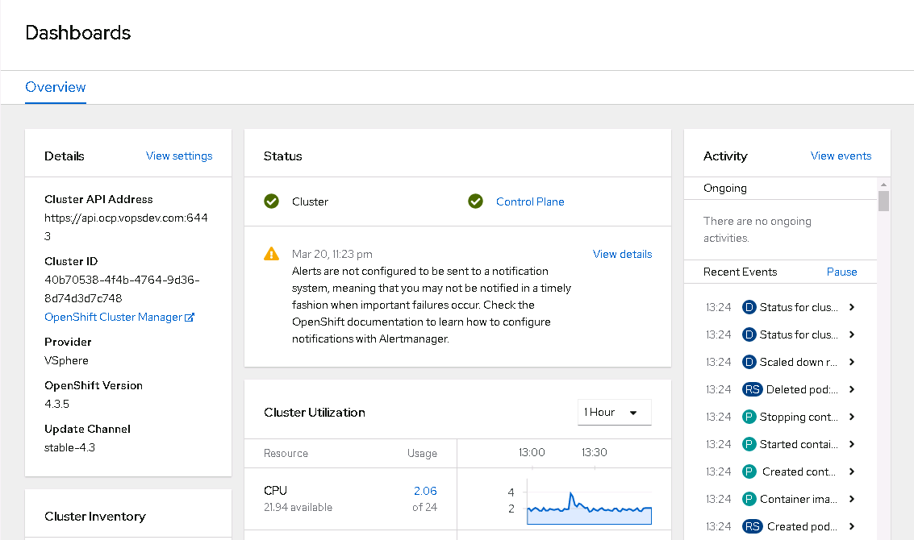

默认安装完成时 OCP 集成的镜像仓库没有配置持久存储, registry pod 会被自动清理, 管理状态为 Removed. 本文将为 OCP 集成镜像仓库配置持久存储. 这里使用基于 minio 的对象存储
关于 registry 持久存储
OCP 官方文档 建议使用对象存储作为 registry 的后端, 并且一再强调不建议在生产环境中使用 NFS. 然而在 OCP 官方文档的 vSphere 和 Baremetal 的配置样例 里又一直采用 NFS 做为 registry 的持久存储, 实在是让人无语.
我的环境有 minio 集群, 通过 endpoint https://s3.svc.vopsdev.com 对外提供服务. 这里将使用 minio 提供的对象存储作为 registry 的后端.
配置 minio
创建 bucket
1 mc mb minio/ocp-registry
创建用户和策略
1 2 3 4 5 6 7 8 9 10 11 12 13 14 15 16 17 18 19 20 21 22 23 24 25 26 27 28 29 30 31 32 33 34 35 36 37 38 39 40 41 cat > ocp-registry-policy.json <<EOF { "Version": "2012-10-17", "Statement": [ { "Action": [ "s3:GetObject", "s3:PutObject", "s3:DeleteObject", "s3:ListMultipartUploadParts", "s3:AbortMultipartUpload" ], "Effect": "Allow", "Resource": [ "arn:aws:s3:::ocp-registry/*" ], "Sid": "" }, { "Action": [ "s3:ListBucket", "s3:GetBucketLocation", "s3:ListBucketMultipartUploads" ], "Effect": "Allow", "Resource": [ "arn:aws:s3:::ocp-registry" ], "Sid": "" } ] } EOF mc admin policy add minio ocp-registry ocp-registry-policy.json mc admin policy info minio ocp-registry mc admin user add minio ocp-registry-id ocp-registry-secret mc admin policy set minio ocp-registry user=ocp-registry-id mc admin user info minio ocp-registry-id
配置 OCP registry
初始状态, 在 openshift-image-registry 下只有 registry operator pod 在运行, 并没有 registry pod
1 2 3 oc get pod -n openshift-image-registry NAME READY STATUS RESTARTS AGE cluster-image-registry-operator-5d7d64d769-q4tw2 2/2 Running 1 2d1h
在 openshift-image-registry 项目下创建 secret 保存访问对象存储所使用的 access_key 和 secret_key
1 oc create secret generic image-registry-private-configuration-user --from-literal=REGISTRY_STORAGE_S3_ACCESSKEY=ocp-registry-id --from-literal=REGISTRY_STORAGE_S3_SECRETKEY=ocp-registry-secret -n openshift-image-registry
通过oc edit configs.imageregistry.operator.openshift.io/cluster编辑 image registry 的配置, 将管理状态设置为 Managed, 并指定后端对象存储信息:
1 2 3 4 5 6 7 8 9 10 spec: managementState: Managed storage: s3: bucket: ocp-registry region: local regionEndpoint: https://s3.svc.vopsdev.com routes: - name: internal-registry-route hostname: registry-int.apps.ocp.vopsdev.com
同时这里也指定了 route 将集成镜像库的服务通过 ingress 暴露出来. 然后就可以看到 image-registry pod 已经起来了
1 2 3 4 5 6 7 8 9 10 oc get pod -n openshift-image-registry NAME READY STATUS RESTARTS AGE cluster-image-registry-operator-5d7d64d769-q4tw2 2/2 Running 1 2d1h image-registry-5cdb47886d-cq6l5 1/1 Running 0 115s node-ca-2w9jf 1/1 Running 0 116s node-ca-5mccq 1/1 Running 0 116s node-ca-5vv95 1/1 Running 0 116s node-ca-fqk8q 1/1 Running 0 116s node-ca-gfhvl 1/1 Running 0 116s node-ca-hmr4w 1/1 Running 0 116s
测试
创建本地账户
为了测试方便, 给 OCP 配置 HTPasswd 的认证源, 创建几个本地账户
1 2 3 4 5 6 7 8 9 10 11 12 13 14 15 16 17 18 19 20 21 22 23 24 25 26 27 28 29 htpasswd -cBb /tmp/htpasswd admin admin htpasswd -Bb /tmp/htpasswd user1 user1 htpasswd -Bb /tmp/htpasswd user2 user2 oc create secret generic htpass-secret --from-file=htpasswd=/tmp/htpasswd -n openshift-config oc apply -f - <<EOF apiVersion: config.openshift.io/v1 kind: OAuth metadata: name: cluster spec: identityProviders: - name: htpasswd_provider mappingMethod: claim type: HTPasswd htpasswd: fileData: name: htpass-secret EOF oc adm policy add-cluster-role-to-user cluster-admin admin oc new-project sandbox-1 oc policy add-role-to-user registry-editor user1 oc login -u user1
测试 registry
1 2 3 4 docker login -u user1 -p $(oc whoami -t) registry-int.apps.ocp.vopsdev.com docker pull alpine docker tag alpine:latest registry-int.apps.ocp.vopsdev.com/sandbox-1/alpine:latest docker push registry-int.apps.ocp.vopsdev.com/sandbox-1/alpine:latest
在 minio 的浏览器界面上也可以看到结果

使用本地帐号 admin 登录 OCP web console, 可以发现针对 image registry 被删除的状态提示已经消失. 目前还提示 Alertmanager 的 notification 没有正确设置, 这部分会在后面监控配置中解决.
